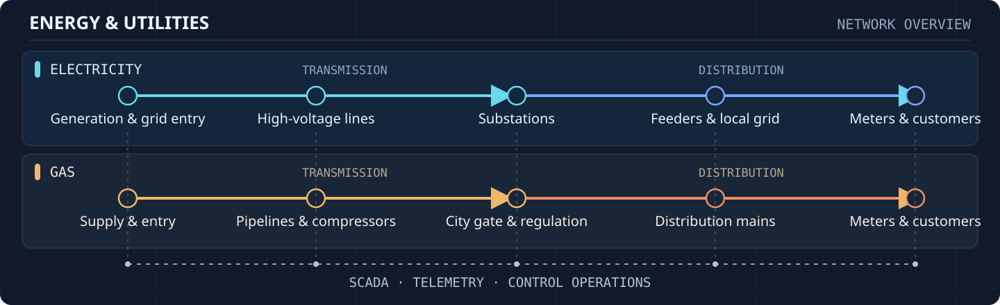

Architecture portfolio
Case Studies & Experience
Enterprise solution architecture, cloud data lakehouse, and OT/IT integration programs delivered across electricity and gas utilities.

Illustrative industry context, not a project-specific architecture diagram.
- Electricity Generation, high-voltage transmission, substations, local distribution, and metering.
- Gas Supply, pipelines, compression, city gates, distribution mains, and customer service.
- Operations Telemetry and control connect field assets across both networks.
Architecture case studies
Selected Programs & Platforms
Agentic SDLC & Enterprise Copilot Enablement
Implemented and operationalised modern AI platforms across client architecture and delivery workflows—combining Google Antigravity, Gemini Enterprise, GitHub Copilot, Claude (Anthropic), and Microsoft 365 Copilot under enterprise security and data governance guardrails.
Impact Accelerated architecture design reviews, legacy code and pipeline refactoring, automated test generation, and cross-program governance.
Kafka 4.0 (KRaft) & Integration Modernisation
Architected and deployed a cloud-native, event-driven integration backbone using Apache Kafka 4.0 (KRaft) and microservices, alongside directing the automated cloud migration and upgrade of enterprise webMethods (9.10 to 10.15).
Impact Decoupled mission-critical electricity and gas workflows with rapid, repeatable CI/CD deployments.
Zero-Trust OT/IT, Grid Battery & Harmonic Metering
Led end-to-end solution architecture for Pole-Top Battery storage, Layer 3 OT Shared Services (OTSS), distribution operations vendor transitions, and Power Quality Harmonic Metering under strict Zero Trust and High-Security (HiSec) protocols.
Impact Securely connected field network telemetry and Layer 3 operational systems with enterprise cloud platforms.
Full-Stack Observability & AIOps Platform
Designed and implemented an enterprise observability stack combining Prometheus, Grafana, and OpenTelemetry distributed tracing, integrated with AIOps for anomaly detection across production utility applications.
Impact Enabled predictive alerting, faster root-cause isolation, and proactive incident management.
SAP S/4HANA Analytics & Power BI Modernisation
Engineered enterprise Power BI remediation, semantic modeling, and BI modernisation aligned with large-scale SAP S/4HANA transformation across core utility operations and finance.
Impact Delivered real-time operational visibility and governed self-service analytics for business stakeholders.
Azure Data Lakehouse & Real-Time CDC Platform
Modernised a legacy Oracle Data Warehouse and Cognos reporting landscape into a cloud-native Azure Lakehouse—uniting streaming change data capture (IBM InfoSphere CDC, Azure Event Hubs) and batch pipelines (Azure Data Factory, Azure Databricks, Delta Lake).
Impact Accelerated analytics delivery, established DataOps CI/CD governance, and reduced legacy platform cost.
Five-Minute Settlement (5MS) & Global Settlement
Led data engineering and settlement pipeline architecture for high-volume Australian energy market regulatory reforms, processing interval metering and market settlement workloads under strict compliance timelines.
Impact Achieved a 99.9% success rate across regulatory cutovers with uninterrupted business continuity.
Program descriptions are presented at sector level to respect client and operational confidentiality.
Career history
Professional Experience
-
–Present
Solution Architect
Wipro Limited · Melbourne, Victoria, Australia
Leading target-state architecture, platform modernisation, and multi-vendor technical delivery across electricity and gas distribution programs.
- Enterprise & Agentic AI Enablement: Applied and championed Google Antigravity, Gemini Enterprise, GitHub Copilot, Claude (Anthropic), and Microsoft 365 Copilot across client delivery—accelerating architecture documentation, agentic code modernisation, and governance.
- OT/IT & Grid Architecture: Led solution architecture for Pole-Top Battery storage, Distribution Operations & Maintenance vendor transition, Layer 3 OT Shared Services (OTSS), and Zero-Trust/HiSec Power Quality Harmonic Metering.
- Event-Driven & Middleware Platforms: Designed cloud-native event platforms on Apache Kafka 4.0 (KRaft) and microservices; directed automated cloud migration and upgrade of webMethods (9.10 to 10.15).
- Full-Stack Observability & SRE: Architected enterprise observability with Prometheus, Grafana, OpenTelemetry distributed tracing, and AIOps predictive alerting.
- Enterprise Analytics: Engineered Power BI remediation and semantic layer modernisation for SAP S/4HANA migration, enabling real-time self-service BI.
-
–
Technical Lead · Data Engineering
Wipro Limited · Melbourne, Victoria, Australia
Spearheaded cloud data lakehouse modernisation, regulatory energy market programs, and data engineering team leadership.
- Cloud Data Lakehouse: Delivered an Azure Lakehouse integrating real-time streaming (IBM InfoSphere CDC, Azure Event Hubs) and batch pipelines (Azure Data Factory, Azure Databricks, Delta Lake).
- Warehouse & BI Modernisation: Migrated legacy Oracle Data Warehouse and Cognos reporting to Azure Databricks and Power BI, improving query performance, data accessibility, and cost efficiency.
- Regulatory Market Delivery: Led Five-Minute Settlement (5MS) and Global Settlement data programs with a 99.9% success rate.
- DataOps & Leadership: Established CI/CD and automated testing for data pipelines while mentoring a team of 10+ data engineers.
-
–
Project Engineer · Data Engineering & Warehousing
Wipro Limited · Bengaluru & Chennai, India
Engineered enterprise ETL/ELT pipelines, compliance analytics, and workflow automation for large-scale data warehousing environments.
- Multi-Source Data Integration: Built high-volume ETL/ELT workflows using IBM DataStage and Oracle Data Integrator (including custom ODI knowledge modules) across RDBMS, XML, and flat-file sources.
- Operational Dashboards & Automation: Designed compliance and operational dashboards in Power BI and Elasticsearch, and automated recurring data workflows via Unix shell scripting and Power Automate.
Academic foundation
Education
-
–
Bachelor of Engineering (B.E.) · Electrical & Electronics Engineering
K.S. Rangasamy College of Technology · Tamil Nadu, India
Core engineering grounding in power systems, electrical networks, instrumentation, and control—providing domain fluency across electricity transmission, distribution, and smart grid telemetry.